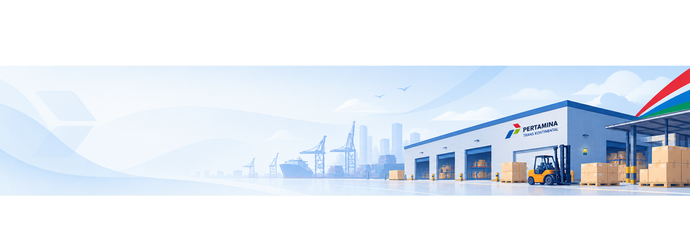

Total Inventaris778 data contoh ditampilkan
DASHBOARD INVENTARIS
Selamat datang di SIGMA
Pantau perangkat, kondisi barang, dan aktivitas gudang dalam satu tempat.

Kondisi Baik6381,8% dari inventaris
Sedang Dipinjam9Perlu pemantauan
Perlu Perbaikan5Tindak lanjut teknisi
Daftar Inventaris
Temukan dan kelola perangkat gudang
| No. | Kode | Nama Perangkat | Kategori | Lokasi | Kondisi | Status |
|---|
Tidak ada perangkat yang cocok dengan filter.